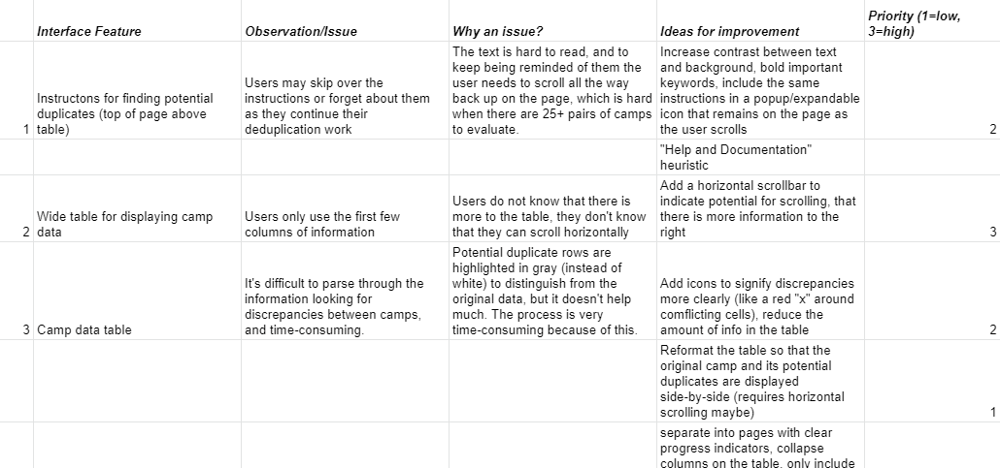
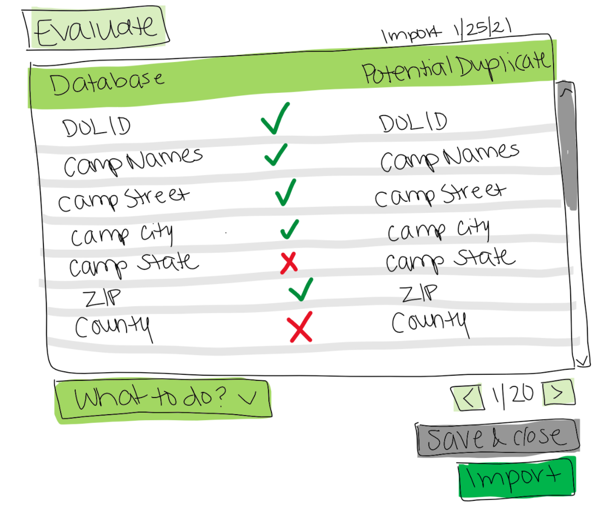
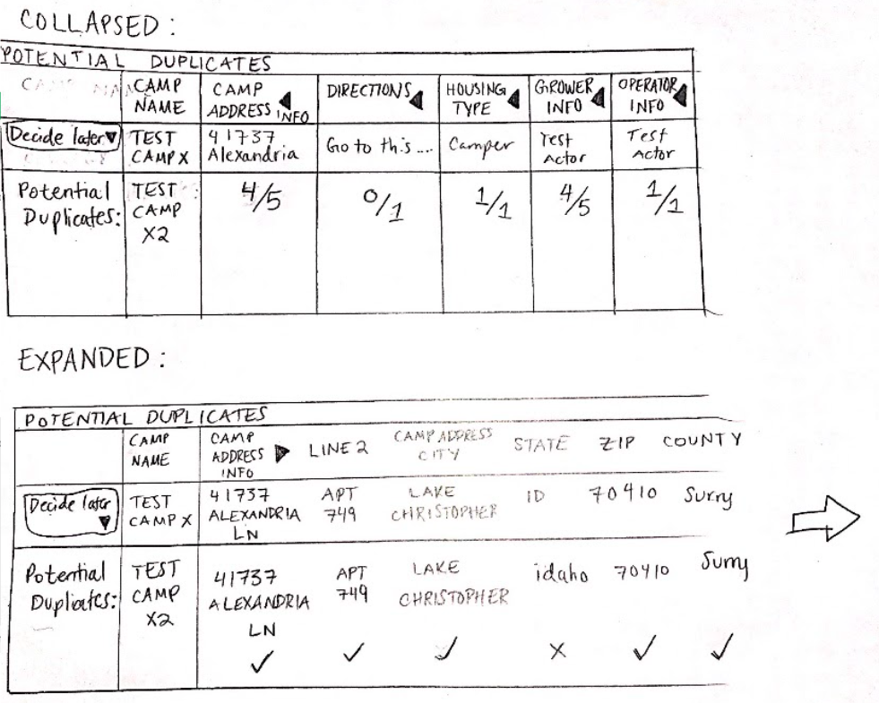
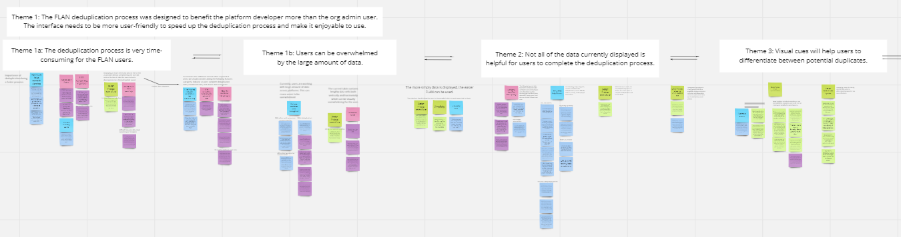
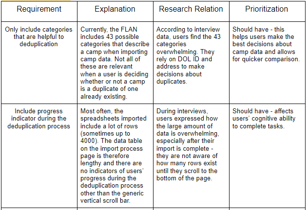
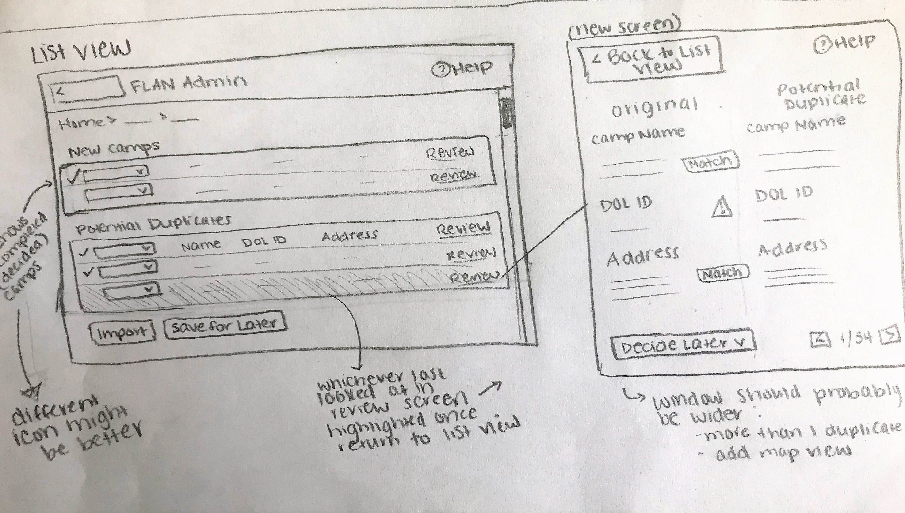
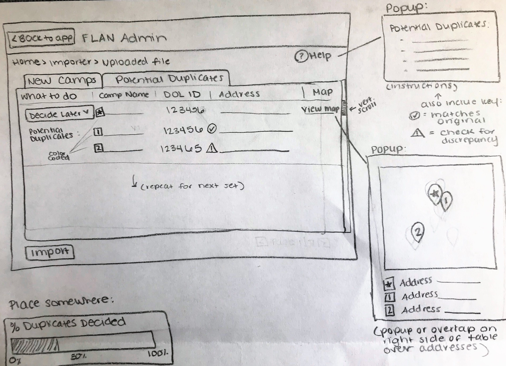
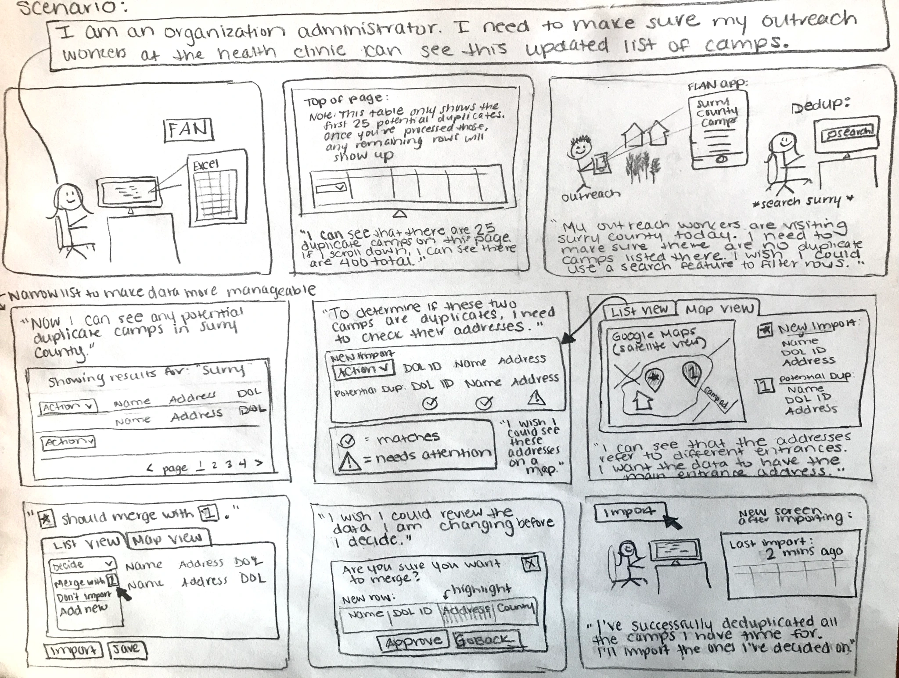
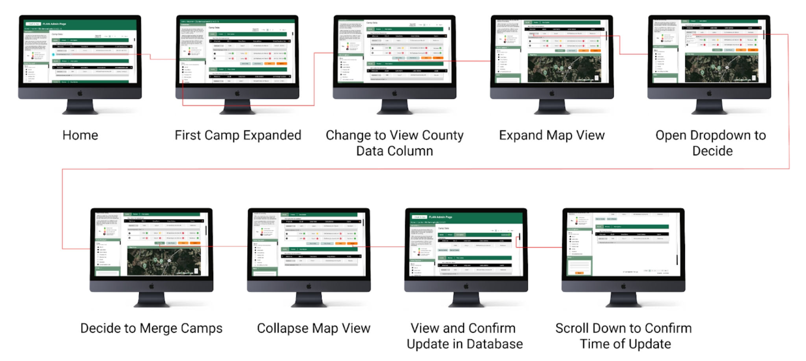

Farm Labor Advocacy
Improving Mobile UX to Deliver Advocacy to Farmworkers in North Carolina
Problem: A farm labor advocacy network uses an existing GPS and data-tracking platform to record the impact of outreach work across multiple organizations.
The user interface has become cluttered due to data discrepancies and hidden functionalities.
Goal: Conduct user research to iteratively design an improved interface for the advocacy network’s internal application, specifically to improve the way site administrators handle imported and duplicated data.
The final design will be delivered to the client for hopeful implementation.
Timeline: September 2020 – April 2021
My Roles: Researcher, Project Manager, Prototyper
Project Team: Molly Bis, Carolyn Duran, Sophia Jacobs, Molly Bis, and Sadhana Ramaseshadri
Process
Tools: Interviews, User Testing, Paper Prototypes, Miro, Figma, user testing
Research
The UMSI team conducted preliminary research to understand the advocacy network, their site, and the import and deduplication process. They completed comparative analysis with similar platforms like AGHelp and Farmworker Justice, other mapping platforms like Ushahidi and OpenStreetMap,
and analogous comparators like Salesforce and GitHub which also handle data discrepancies.
The team also completed a UX evaluation of the current site which informed initial sketches used as design probes in interviews:



The team conducted six interviews with site administrators and outreach workers from the advocacy network. The interviews helped to understand the following:
- Why do users experience difficulties when importing new camp data and checking for duplicates or spreadsheet errors?
- How do users decide if a possible duplicate should be merged or added to existing camp data?
- Why do certain features on the site work well/not work well? How can they be improved to suit users’ individual needs?

After analyzing the interview data with coding and affinity analysis (shown above), the team created a user persona and user journey, then used all research materials to compile a list of UX requirements:

Iterative Design
From these requirements, the team iterated on various low-fidelity design sketches which informed storyboards, paper prototypes, wireframes, and a high-fidelity prototype.



The user-informed prototype was created iteratively in Figma, receiving frequent feedback from the client team and UMSI classmates.

The UMSI team completed single-system user testing (many with previous interviewees from the project’s research phase) to evaluate the new prototype design. The test included a System Usability Scale survey to compare the new prototype’s performance with that of the current site.
The team found that overall, their new prototype performed better than current site in completing the data deduplication process, although further user testing may reveal additional usability requirements.
*Samples of work are shown on this webpage. Full disclosure of client information and final designs was omitted for client and student privacy.🙂